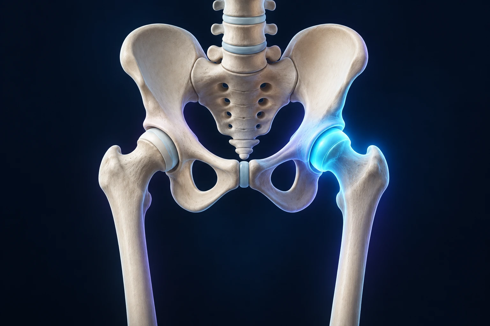

Douleur sur le côté de la hanche : est-ce forcément de l’arthrose ?
Publié le

Une gêne sur le côté de la hanche, notamment au lit ou dans les escaliers, ne signifie pas automatiquement que l’articulation est usée. Le mot « hanche » désigne souvent, dans le langage courant, plusieurs régions voisines. Localiser la douleur est une première étape pour comprendre son origine.
Que trouve-t-on sur le côté de la hanche ?
Le grand trochanter est une saillie osseuse située sur le haut du fémur. Des tendons des muscles fessiers s’y attachent ; des bourses facilitent le glissement des tissus. Une douleur de cette région peut relever d’une tendinopathie, parfois associée à une irritation d’une bourse. On parle de syndrome douloureux du grand trochanter. Le terme « bursite » ne décrit donc pas toujours, à lui seul, l’ensemble du problème. Mersey Care NHS : comprendre la douleur trochantérienne.
Quels symptômes décrire ?
La zone peut être sensible au toucher, douloureuse en position couchée sur le côté concerné ou lors de certaines activités. La gêne peut descendre sur la face externe de la cuisse. Ces éléments orientent l’examen, mais ne suffisent pas à poser soi-même le diagnostic. Notez le côté atteint, les positions gênantes et le retentissement sur le sommeil.
Pour préparer la consultation, donnez un exemple concret : « Je peux marcher sur le plat, mais les escaliers me font mal », ou « Je dois changer de côté la nuit ». Précisez également si la gêne a débuté après une chute ou une modification de vos activités.
Faut-il faire une IRM ?
Le diagnostic repose d’abord sur l’entretien et l’examen. Une échographie peut être utile dans certaines situations complexes ; l’imagerie est choisie selon la question à résoudre. Il n’est pas nécessaire de faire réaliser une IRM de votre propre initiative avant d’avoir été examiné.
Comment adapte-t-on la prise en charge ?
La gestion des activités et une rééducation progressive peuvent aider à retrouver une meilleure tolérance à l’effort. On cherche notamment à limiter les positions qui compriment la zone douloureuse et à adapter le travail musculaire. Le programme doit être compatible avec vos symptômes et vos capacités, plutôt que copié sur une série d’exercices génériques. Dynamic Health NHS : activités et rééducation.
Lors du contrôle, demandez quels changements permettraient de juger les progrès : dormir plus confortablement, monter un étage ou marcher davantage. Signalez aussi ce qui vous empêche de suivre le programme ; cela permet de l’ajuster.
Quels signes demandent un avis urgent ?
Une douleur brutale après une chute avec impossibilité de prendre appui, ou une hanche chaude et gonflée accompagnée de fièvre, nécessite une évaluation urgente. Ces signes ne doivent pas être attribués d’emblée à une simple tendinopathie.
Ces informations générales ne remplacent pas un avis médical personnalisé.